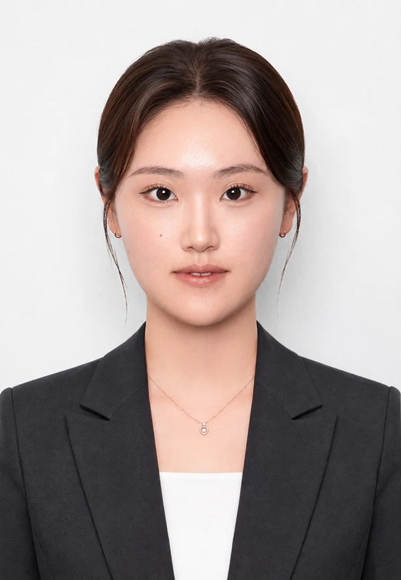

데이터로 원인을 찾고,
공정으로 결과를 바꿉니다.
안녕하세요. NCM/LFP 양극재의 합성과 재생, 불순물 정제, 전기화학적 평가를 연결해 소재 성능을 분석하고 개선하는 연구자 안수연입니다.

재료의 변화를 분석하고,
공정의 해답을 찾습니다.
양극재를 제조하는 것에서 그치지 않고, 구조와 조성, 계면에서 나타나는 변화가 전기화학적 성능에 어떤 영향을 미치는지 살펴봅니다.
NCM 직접재활용 연구에서는 Al, C, F 불순물의 영향을 독립적으로 분석했고, SK온 기업과제에서는 MHP 유래 침출액의 Ca/Mg 정제 조건과 규모 확대 가능성을 검토했습니다. LFP 분야에서는 합성, 전극 제조, 탄소 코팅층 재생까지 연구 영역을 확장하고 있습니다.
핵심 성과 한눈에 보기
연구에서 해결한 문제와 도출한 결과를 먼저 확인할 수 있도록 요약했습니다.
학력 및 연구경력
학업을 기반으로 실제 공정 검증과 연구 성과를 만들어 온 이력입니다.
세종대학교 대학원 에너지자원공학과 · 석사 과정
양극재 직접재활용 불순물 영향 및 배터리 소재 R&D 연구
석사 학위논문: Challenges of direct recycling: Impurity-driven degradation in LiNiCoMnO₂ cathodes세종대학교 전기화학에너지변환/저장 연구실 · 석사과정 연구원
NCM/LFP 소재 합성, 재활용 원료 정제, 데이터 분석, Coin cell 평가 및 연구 결과보고
세종대학교 지구자원시스템공학과 · 학사
학사 학위 취득, 전공 평점 3.95 / 4.50
Selected Research Projects
각 프로젝트의 문제 상황, 실험 접근, 분석 방법, 성과와 기여도를 자세히 확인할 수 있습니다.
NCM 직접재활용
불순물 열화 분석
Al, C, F 잔류 불순물의 구조 및 계면 영향과 전기화학적 성능 저하 원인을 분리해 분석했습니다.
SCI(E) 제1저자 논문View ProjectMHP 침출액
Ca/Mg 정제 공정
NaF 기반 정제 조건을 도출하고 반응기 혼합 방식과 규모 변화에 따른 공정 적용성을 검증했습니다.
SK온 기업과제View ProjectLFP 합성 최적화
및 활물질 재생
공침 및 전극 제조 변수를 개선하고, 불균일한 탄소 코팅층을 재생하여 성능 회복 가능성을 검토했습니다.
재생 LFP 약 157 mAh/gView Project연구 수행 기술
공정 개발, 소재 특성 분석, 전기화학 평가를 연결한 실험 역량입니다.
Process & Synthesis
소재 제조 및 습식 정제 공정 설계와 조건 검증
Characterization
조성, 결정구조 및 표면 특성을 다각도로 해석
Electrochemistry
전극 및 Coin cell을 제조하고 전기화학적 성능 평가
연구성과 및 발표
성과를 확인할 수 있는 프로젝트 페이지와 연결합니다. 논문 DOI 및 공식 발표 링크는 최종 검수 후 추가할 수 있습니다.